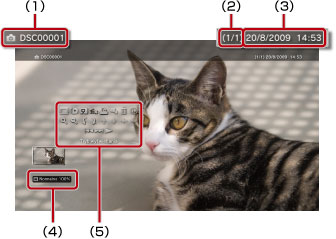

Zdjęcia > Korzystanie z panelu sterowania
Korzystanie z panelu sterowania
Za pomocą wyświetlanego na ekranie panelu sterowania można wykonywać różne operacje. Panel sterowania można wyświetlać lub ukrywać przez naciśnięcie przycisku  .
.
Tryb wyświetlania

Umożliwia zmianę rozmiaru obrazu wyświetlanego na ekranie.
| Normalne | Wybierz to ustawienie, aby obraz dopasował się do rozmiaru ekranu z zachowaniem swoich oryginalnych proporcji. |
|---|---|
| Powiększenie | Wybierz to ustawienie, aby obraz był wyświetlany na całym ekranie z zachowaniem swoich oryginalnych proporcji. Część obrazu u góry i u dołu oraz z lewej i prawej strony zostanie odcięta. |
Wskazówka
W przypadku niektórych plików graficznych zmiana trybu wyświetlania może nie być możliwa.
Zmień efekt
Umożliwia zmianę metody przełączania obrazów.
| Normalne | Wybierz to ustawienie, aby zastąpić aktualnie wyświetlany obraz następnym obrazem. |
|---|---|
| Slajd | Wybierz to ustawienie, aby zastąpić aktualnie wyświetlany obraz następnym obrazem w formacie pokazu slajdów. |
| Zanikanie | Wybierz to ustawienie, aby użyć efektu zanikania przy przechodzeniu do następnego obrazu. |
Przycinanie
Umożliwia usuwanie niepotrzebnych fragmentów u góry, u dołu, z prawej oraz z lewej strony obrazu. Do zaznaczenia obszaru, który ma zostać zachowany, należy użyć lewego i prawego drążka kontrolera bezprzewodowego. Ponadto lewy drążek służy do przewijania we wszystkich kierunkach, a prawy do przybliżania i oddalania widoku. Przycięte obrazy są zapisywane w plikach pod innymi nazwami.
Wskazówka
Przycinać można wyłącznie obrazy zapisane w pamięci masowej systemu PS3™.
Dodaj do listy odtwarzania
Umożliwia dodanie obrazu do listy odtwarzania.
Wskazówka
Do listy odtwarzania można dodawać tylko obrazy zapisane w pamięci masowej systemu.
Drukuj
Umożliwia wydrukowanie obrazu za pomocą drukarki.
Wskazówka
Aby można było drukować, należy najpierw skonfigurować drukarkę w oknie [Wybór drukarki] w obszarze  (Ustawienia) >
(Ustawienia) >  (Ustawienia drukarki).
(Ustawienia drukarki).
Ustaw jako tapetę
Pozwala ustawić wyświetlany na ekranie obraz jako tapetę. Obraz jest używany w tej roli dokładnie w postaci, w jakiej istnieje w trakcie nadawania mu tego statusu — bez względu na fakt, czy jest powiększony, zmniejszony lub obrócony.
Wskazówki
- Gdy tapeta nie jest używana, należy odpowiednio zmienić ustawienie opcji w kategorii (Ustawienia) >
 (Ustawienia motywu) > [Tło].
(Ustawienia motywu) > [Tło]. - Status tapety można nadać tylko jednemu obrazowi naraz. Zaznaczenie innego obrazu powoduje zastąpienie aktualnie ustawionego obrazu.
Usuń
Umożliwia usuwanie obrazów.
Wskazówka
Można usuwać tylko obrazy zapisane w pamięci masowej systemu.
Wyświetl
Wyświetlenie informacji o obrazie. Po każdym naciśnięciu przycisku  następuję przełączenie między ekranem z informacjami Exif, ekranem z paskiem informacji i ekranem bez informacji dodatkowych.
następuję przełączenie między ekranem z informacjami Exif, ekranem z paskiem informacji i ekranem bez informacji dodatkowych.
Ekran z paskiem informacji

(1) |
Nazwa obrazu |
|---|---|
(2) |
Numer obrazu / całkowita liczba obrazów |
(3) |
Data i godzina zarejestrowania |
(4) |
Ikona stanu |
(5) |
Panel sterowania |
Powiększ / Pomniejsz

Umożliwia przybliżanie i oddalanie obrazu, czy odpowiednio jego powiększanie i pomniejszanie. Lewy drążek kontrolera bezprzewodowego umożliwia przewijanie obrazu w dowolnym kierunku, a prawy — jego powiększanie i pomniejszanie.
Obróć w lewo / Obróć w prawo
Umożliwia obracanie obrazu o 90 stopni w lewo lub w prawo.
W górę / W dół / Lewy / Prawy
Umożliwia przesuwanie obrazu w celu wyświetlenia jego niewidocznych części, np. gdy dla opcji (Tryb wyświetlania) wybrano ustawienie [Powiększenie].
Poprzedni / Następny
Umożliwia wyświetlanie poprzedniego lub następnego obrazu.
Pokaz slajdów
Umożliwia automatyczne wyświetlanie wszystkich obrazów po kolei.